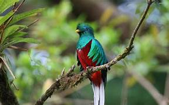

México es uno de los países con mayor biodiversidad en el mundo. Posee una gran variedad de climas, ecosistemas y regiones geográficas que permiten que miles de especies de animales habiten en su territorio. Muchas de estas especies son endémicas, lo que significa que solo viven aquí y no se encuentran en ningún otro lugar del planeta.
Este proyecto tiene como objetivo dar a conocer seis animales representativos de nuestra fauna: el Ajolote, la Vaquita Marina, el Quetzal, el Lobo Mexicano, el Teporingo y el Jaguar. Todos ellos son importantes para el equilibrio de la naturaleza, pero actualmente se encuentran en situación de riesgo, amenazados o en peligro de extinción debido a actividades humanas como la contaminación, la destrucción de sus hábitats y la caza.
Aquí aprenderás sus características, dónde viven, qué comen, por qué están en riesgo y qué podemos hacer para protegerlos y conservarlos para las futuras generaciones.

Ajolote

Vaquita Marina

Quetzal
.jpg)
Lobo Mexicano
.jpg)
Teporingo
.jpg)
Jaguar
Conoce más sobre la riqueza natural de México y la importancia de cuidar a nuestras especies:
| Nombre común | Nombre científico | Hábitat principal | Estado de conservación |
|---|---|---|---|
| Ajolote | Ambystoma mexicanum | Canales de Xochimilco, CDMX | 🔴 En peligro crítico |
| Vaquita Marina | Phocoena sinus | Golfo de California | 🔴 En peligro crítico |
| Quetzal | Pharomachrus mocinno | Bosques nubosos | 🟡 Casi amenazado |
| Lobo Mexicano | Canis lupus baileyi | Bosques y montañas del norte | 🔴 En peligro |
| Teporingo | Romerolagus diazi | Zonas volcánicas del centro | 🔴 En peligro |
| Jaguar | Panthera onca | Selvas y humedales del sur | 🟡 Casi amenazado |
Escogí hablar sobre la fauna de México y estas especies en particular porque considero que es fundamental conocer y valorar lo que tenemos en nuestro país. Muchas veces no sabemos que animales tan únicos y especiales viven solo aquí, y tampoco nos damos cuenta de que están desapareciendo.
Quise realizar este trabajo para informar a los demás sobre la situación de cada animal, resaltar su importancia en la naturaleza y explicar que todos podemos ayudar a protegerlos. Al conocerlos mejor, aprendemos a respetarlos y entendemos que cuidar el medio ambiente es cuidar también nuestra propia vida y cultura, ya que muchos de estos animales forman parte de nuestra historia y tradiciones.
Mi objetivo es que este proyecto sirva para reflexionar y tomar conciencia de que aún estamos a tiempo de actuar y salvar a estas especies antes de que sea demasiado tarde.